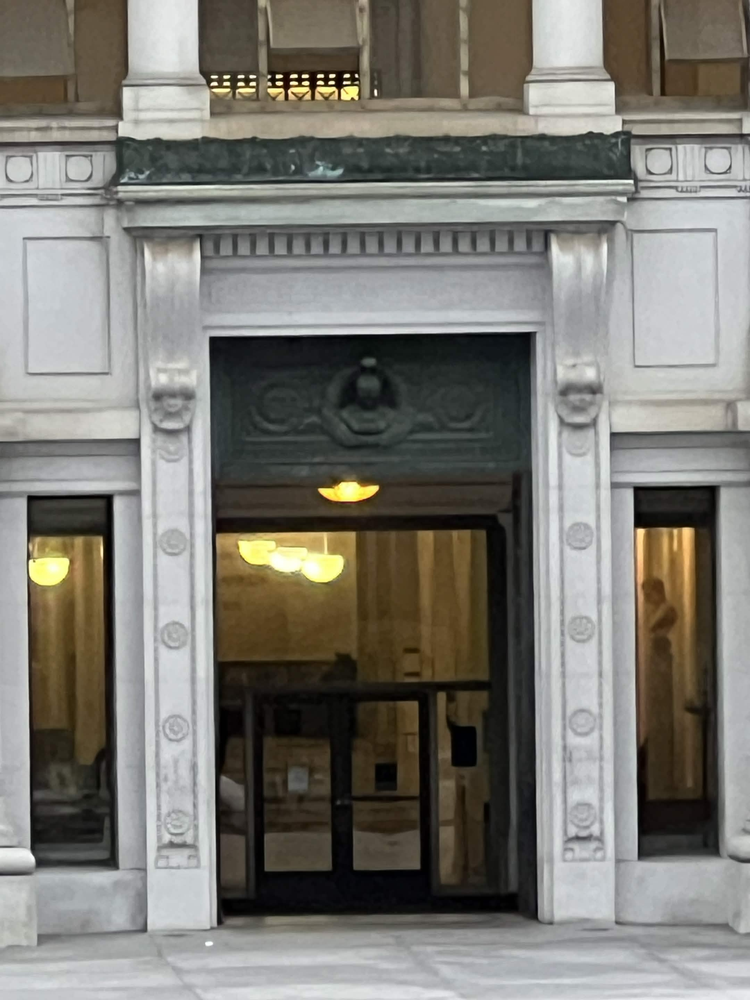
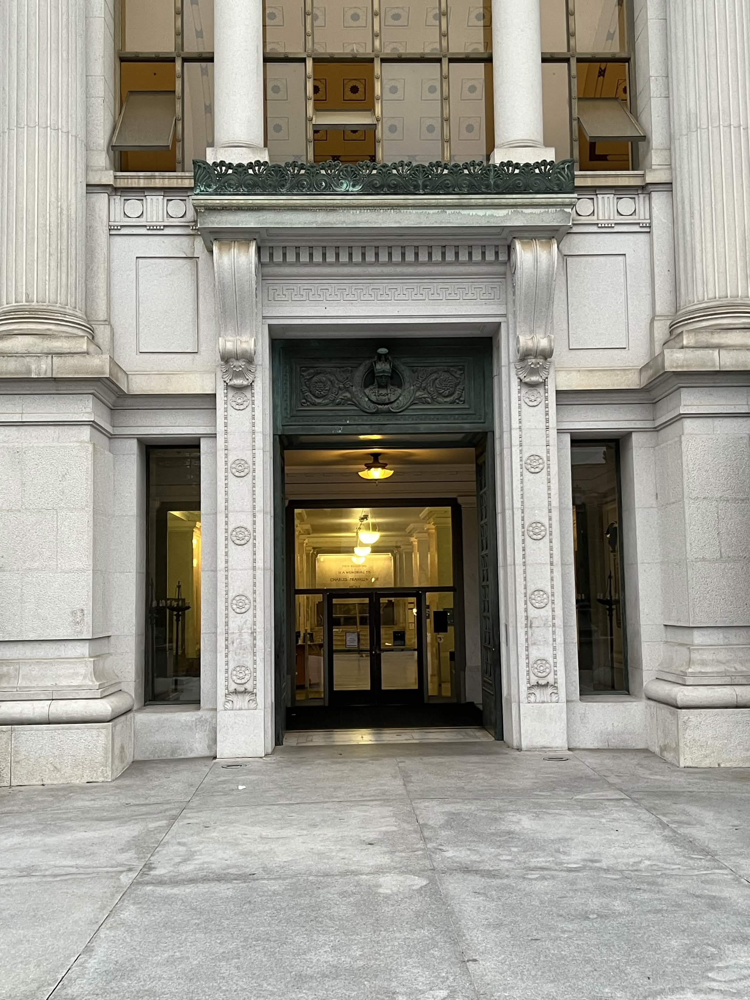
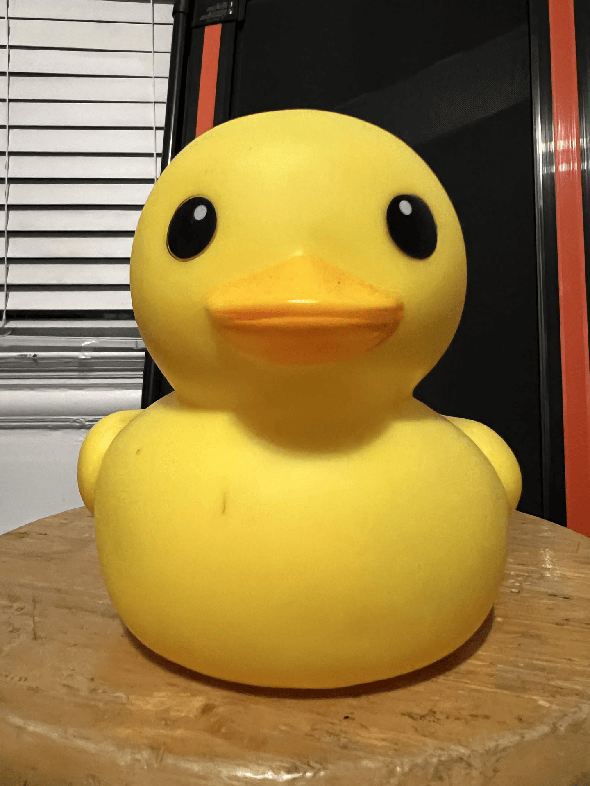

Part 1: Selfie
Close Up
Several feet from your subject, Zoom in
Part 2: Architectural Perspective Compression
Zoom in, and take a photo


Walk toward the building, and take a second photo, now without zoom
Part 3: The Dolly Zoom
Now take a few (4-8 or even more!) still photos while you move the camera back and zoom in, keeping the resulting image roughly the same size
